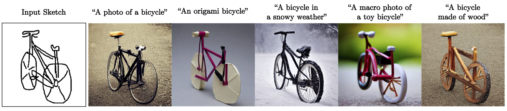
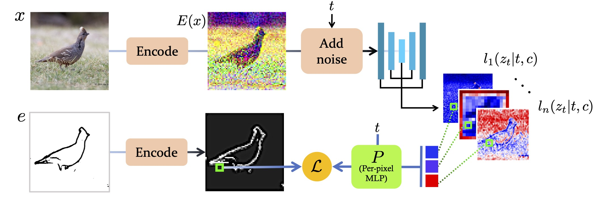
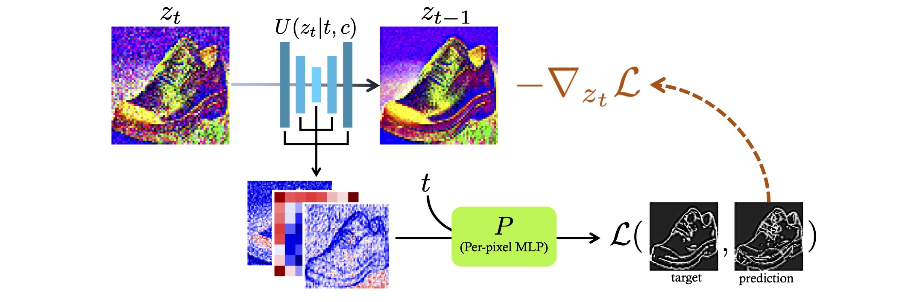
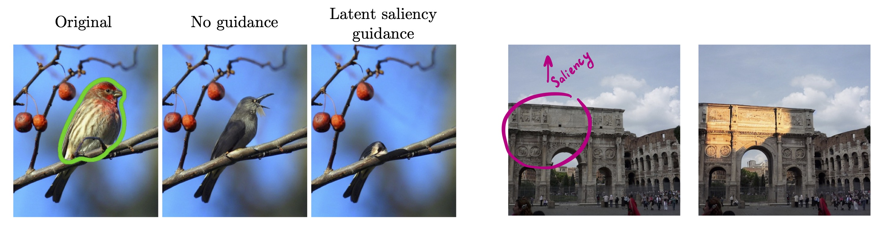

Sketch-Guided Text-to-Image Diffusion Models
SIGGRAPH 2023

Text-to-Image models have introduced a remarkable leap in the evolution of machine learning, demonstrating high-quality synthesis of images from a given text-prompt. However, these powerful pretrained models still lack control handles that can guide spatial properties of the synthesized images. In this work, we introduce a universal approach to guide a pretrained text-to-image diffusion model, with a spatial map from another domain (e.g., sketch) during inference time. Unlike previous works, our method does not require to train a dedicated model or a specialized encoder for the task. Our key idea is to train a Latent Guidance Predictor (LGP) - a small, per-pixel, Multi-Layer Perceptron (MLP) that maps latent features of noisy images to spatial maps, where the deep features are extracted from the core Denoising Diffusion Probabilistic Model (DDPM) network. The LGP is trained only on a few thousand of images and constitutes a differential guiding map predictor, over which the loss is computed and propagated back to push the intermediate images to agree with the spatial map. The per-pixel training offers flexibility and locality which allows the technique to perform well on out-of-domain sketches, including free-hand style drawings. We take a particular focus on the sketch-to-image translation task, revealing a robust and expressive way to generate images that follow the guidance of a sketch of arbitrary style or domain.
Our method enables transfering hand-painted sketch into a natural highly-detailed image with a style control by any textual prompt. Here you can vary the generated image description while keeping alignement with the sketch.

Another sketch-to-image control is the fidelity to the edges. It can be varied by changing the spatial guidance stop time.
This video shows the intermediate results for the sketch of a T-Rex drawing process.
The main idea is to perform a spatial guidance with gradients of a small model (we call it Latent Edge Predictor) that operates on intermediate DDPM activations.
Training scheme of the Latent Edge Predictor. Given an image, we first encode it and add noise to get a VQVAE representation. Then we pass it through the core U-net network of a DDPM, and extract a set of latent spatial features. Then our Latent Edge Predictor, which is a per-pixel MLP, is trained to map each pixel in the concatenated features to the corresponding pixel in the encoded edge map.
Sketch-Guided Text-to-Image Synthesis Scheme. Given an encoded noisy image, our method extracts its deep features during the inference process of a text-to-image diffusion model. In each of the denoising steps t, we aggregate the intermediate model features, and pass them in our per-pixel Latent Edge Predictor to predict the encoded edge map. Then we calculate the gradient of the similarity between the desired edges w.r.t. the input, and use it as a guidance for the denoising process that pushes the synthesized image to have edges close to the target edge map.
Our approach is applicable to any spatial attributes. This image demonstrates the spatial guidance being applied to an inpainting DDPM to suppress, and to increase saliency of a region on interest
 @article{voynov2022sketch,
title={Sketch-Guided Text-to-Image Diffusion Models},
author={Voynov, Andrey and Abernan, Kfir and Cohen-Or, Daniel},
booktitle={arXiv preprint arXiv:2211.13752},
year={2022}
}
Acknowledgements: We thank Chu Qinghao, Yael Vinker, Yael Pritch, Dani Valevski and David Salesin for their valuable inputs that helped improve this work. This page code is originated on DreamBooth.